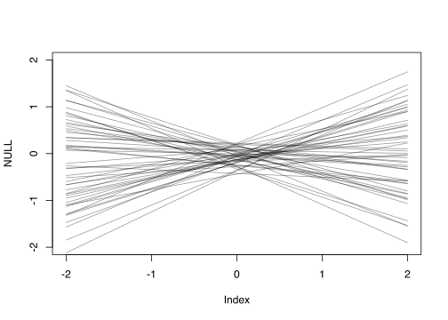
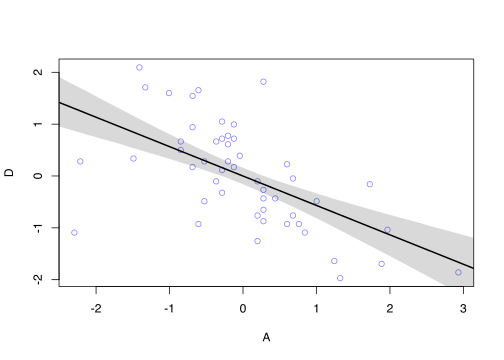
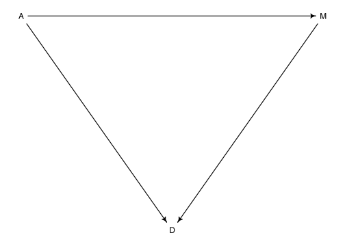
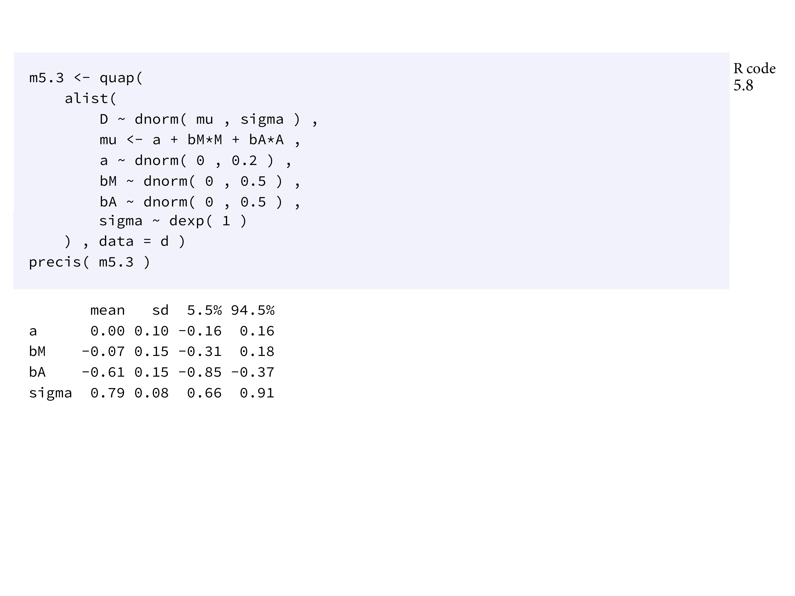
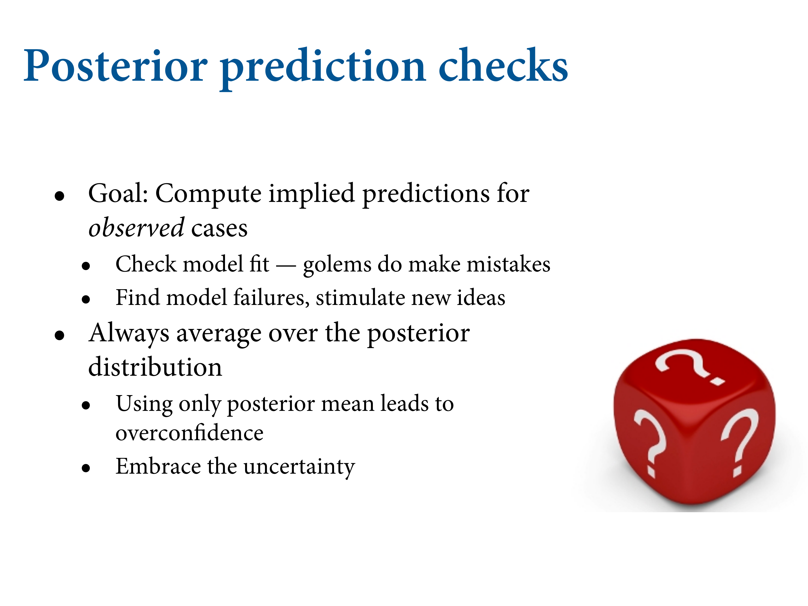
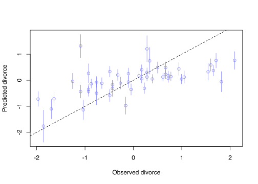
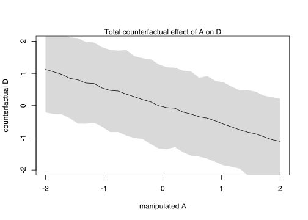
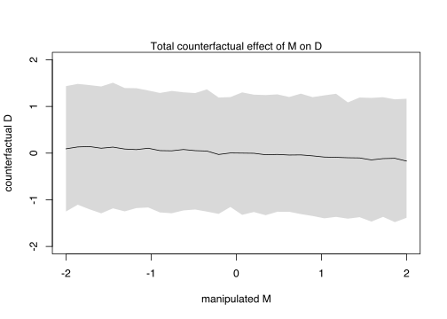
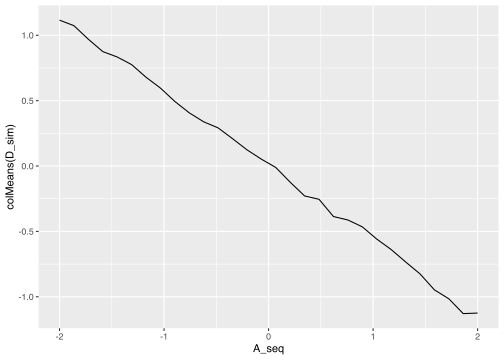

5.1 Spurious association

Another variable - median age at marriage, could also be causal. Which could it be? We want to now put both in the same model, which reveals that one of these is an imposter.
# load data
data("WaffleDivorce")
d = WaffleDivorce
# Standardise variables
d$D = rethinking::standardize( d$Divorce )
d$M = rethinking::standardize( d$Marriage)
d$A = rethinking::standardize( d$MedianAgeMarriage)This is what multiple regression is for. We’ve got two questions in a model that has both questions. Do you get any predictive information from the second variable?
The arrows have directions to them; can be bidirectional. They’re acyclic, so they don’t loop. They’re called graphs because they have nodes and edges. The associations are Bayesian networks, but they don’t have interactions.
We have here a plausible graph. How does A affect M? If the young are getting married too, then more people are getting married. Median age of marriage influences divorce rate because possibly young people make worse decisions. Is the arrow from M to D there? We want to tell the difference between A and D, and M and D. NOTE: when you’re walking along the path, you can walk backwards along a path.
We want to tell the difference between these two things. Something causes waffle house, and something causes divorce. That thing is the South, and so they end up being correlated even though there’s no causal relationship.
| means “conditional on”.
Already know how to do these, just need to do extra stuff. Linear regression is a special type of Bayesian network where there’s an outcome variable, which is assigned Gaussian probability with some mean that is conditional based on some variable, and a standard deviation. The is are states. Have some intercepts.
![Have to think harder about priors now. It help a lot by standardising the priors - converting them into Z-scores. If you make all your variables z-scores, you make you life easier. (But not in all cases.) When you standardise your predictors, you're setting your mean as 0. The regression line has to go through 0, and so alpha should be 0, We'll give it a Gaussian prior with a tight SD. Maybe should even be tighter. Slopes are a little harder. You don't want to use flat priors because you don't want it to think wildly impossible slopes are possible to start. That's why we do some prior predictive simulation.](slides/L05/15.png)
Have to think harder about priors now. It help a lot by standardising the priors - converting them into Z-scores. If you make all your variables z-scores, you make you life easier. (But not in all cases.) When you standardise your predictors, you’re setting your mean as 0. The regression line has to go through 0, and so alpha should be 0, We’ll give it a Gaussian prior with a tight SD. Maybe should even be tighter. Slopes are a little harder. You don’t want to use flat priors because you don’t want it to think wildly impossible slopes are possible to start. That’s why we do some prior predictive simulation.
You can fit your model. You can run that model. extract.prior samples from the prior to simulate. Then pass it to link to create predictions based on the prior. Then you can plot the regression lines.
If \(\beta_A = 1\), that would imply that a change of one standard deviation in age at marriage is assocatied with a change of one standard deviation in divorce.
To know if that’s strong, how big is a standard deviation of age at marriage?
sd( d$MedianAgeMarriage )## [1] 1.24363m5.1 = rethinking::quap(
alist(
D ~ dnorm( mu , sigma ) ,
mu <- a + bA * A ,
a ~ dnorm( 0 , 0.2 ) ,
bA ~ dnorm( 0 , 0.5 ) ,
sigma ~ dexp( 1 )
) , data = d )
This is 50 regression lines from the prior. Standardised deviation of marriage. 2 SD is almost all. If your model thinks a possible divorce rate is outside the observable range of divorce rates, then they’re bad. This prior allows really strong relationships. Allows it to govern nearly all the variation in divorce rate. But we’ll move forward with this. This is the flattest prior you could justify scientifically. Priors by frequentists consider even crazier priors, just as vertical lines.
set.seed(10)
prior = rethinking::extract.prior( m5.1 )
mu <- rethinking::link( m5.1 ,
post=prior ,
data=list( A=c(-2,2) ) )
plot( NULL , xlim=c(-2,2) , ylim=c(-2,2) )
for ( i in 1:50 ) lines( c(-2,2) , mu[i,] , col=col.alpha("black",0.4) )
Now for the posterior predictions:
# compute percentile interval of mean
A_seq = seq( from=-3 , to=3.2 , length.out=30 )
mu = link( m5.1 , data=list(A=A_seq) )
mu.mean = apply( mu , 2, mean )
mu.PI = apply( mu , 2 , PI )
# plot it all
plot( D ~ A , data=d , col=rangi2 )
lines( A_seq , mu.mean , lwd=2 )
shade( mu.PI , A_seq ) \(\beta_A\) is reliably negative. You can fit a similar regression for the relationship in the left-hand plot:
m5.2 <- rethinking::quap(
alist(
D ~ dnorm( mu , sigma ) ,
mu <- a + bM * M ,
a ~ dnorm( 0 , 0.2 ) ,
bM ~ dnorm( 0 , 0.5 ) ,
sigma ~ dexp( 1 )
) , data = d )Drawing a DAG
dag5.1 <- dagitty::dagitty( "dag{ A -> D; A -> M; M -> D }" )
dagitty::coordinates(dag5.1) <- list( x=c(A=0,D=1,M=2) , y=c(A=0,D=1,M=0) )
rethinking::drawdag( dag5.1 )
5.1.2 Testable implications
DMA_dag2 <- dagitty('dag{ D <- A -> M }')
impliedConditionalIndependencies( DMA_dag2 )## D _||_ M | ADMA_dag1 <- dagitty('dag{ D <- A -> M -> D }')
impliedConditionalIndependencies( DMA_dag1 )No conditional independencies, so no output.
5.1.3 Multiple regression notation
Linear means additive, so the model makes a plane. You keep adding them together. There are four parameters. \(\alpha\), two slopes \(\beta_1\) and \(\beta_2\), and the standard deviation \(\sigma\).
5.1.4 Approximating the posterior
m5.3 <- quap(
alist(
D ~ dnorm( mu , sigma ) ,
mu <- a + bM*M + bA*A ,
a ~ dnorm( 0 , 0.2 ) ,
bM ~ dnorm( 0 , 0.5 ) ,
bA ~ dnorm( 0 , 0.5 ) ,
sigma ~ dexp( 1 )
) , data = d )
precis( m5.3 )## mean sd 5.5% 94.5%
## a -2.828642e-05 0.09707123 -0.1551669 0.1551103
## bM -6.553086e-02 0.15076312 -0.3064794 0.1754177
## bA -6.136370e-01 0.15097351 -0.8549218 -0.3723521
## sigma 7.850672e-01 0.07783076 0.6606786 0.9094558
Here’s the quap code, and we get a table of coefficients. Look for the mean, and as I promised, \(\alpha\) is 0. `bM is about twice the size of the posterior value itself. No consistent relationship. Age of marriage however, is -.6, but now the posterior mass is entirely below 0. What’s the lesson here? There’s probably no causal relationship between marriage rate and divorce, and that’s because it was confounded by age of marriage.
This shows all three models. Bottom is age of marriage only. The one with marriage rates in the middle. Then marriage rate and and age of marriage in the bottom.
# Faulty code
#plot( rethinking::coeftab(m5.1,m5.2,m5.3), par=c("bA","bM") )This is the graph. Once you know the median age of marriage, you get little extra information in marriage. But when you ad A, it does give you information. If you just wanted to make a prediction, M is useful, but if you wanted to change D, you need to change other things like A.
You have to be clear about whether you’re interesting in predicting things, or understanding the true nature of things.
Let’s simulate the divorce example. Every DAG implies a simulation, and such simulations can help us design models to correclty infer relationships among variables.
N = 50 # number of simulated States
age = rnorm(N) # sim A
mar = rnorm(N, -age) # sim A -> M
div = rnorm(N, age) # sim A -> D5.1.5 Plotting multivariate posteriors
How do we visualise models like this? Lots of ways. Usually the most useful way to visualise depends on the model. You want to think about what you’re trying to communicate. The first are predictor residual plots, not that you need to do them, but good for understanding how these linear regressions works.
5.1.5.1 Predictor residual plots
Purpose is to show how the association looks, having controlled for the other predictors. We want to calculate the intermediate states. Great for intuition but terrible for analysis. Never any statistical justification for running regression over residuals. Why? Gives you the wrong answer, because it gives you bias estimates. What to do instead? Multiple regressions.
Recipe:
- Regress a predictor, and find the extra variance left over, and look at the pattern of the relationship between the residuals and the outcome.
# Approximate the posterior
m5.4 = rethinking::quap(
alist(
M ~ dnorm( mu , sigma ) ,
mu <- a + bAM * A ,
a ~ dnorm( 0, 0.2 ) ,
bAM ~ dnorm( 0, 0.5 ) ,
sigma ~ dexp( 1 )
), data = d
)# Compute the residuals
mu = rethinking::link(m5.4)
mu_mean = apply( mu, 2, mean)
mu_resid = d$M - mu_meanHere’s our first residual plot
What are we looking at here? Marriage rate, standardised. THe distance from the regression line - the expected value of M conditional on A, is the residual. THe unexplained bit from the model. Highlighted some states with high residuals. Now we’ll take the absolute distances for each point.
Now take those residuals, and look at the correlation between the residuals of M and D. And you can see nothing. Shows you what the model is doing inside. If you do the multiple regresssion all at once, it handles all of that. If you do it this way you don’t. But really good for intuition. Point of Maine with a really high divorce rate.
Still no explanation about why ME is so high. Now you can pivot A on M.
Then put those on the plot on the bottom. So now that you know M, there’s considerable information in also knowing A. But the reverse is not true.
![This is one of the things we mean. In observational studies like this one, there's no ethical intervention we can make. But we want to make causal information. Linear regression allows you to do that, but only if you have an idea of the causal relationship between the variables. To interpret, you need a causal framework. We'll have an example latter when controlling can *create* a confound. These models are not magic. You shouldn't get cocky. This is the kind of study where you use average data. Quite a pathological dataset.](slides/L05/29.png)
This is one of the things we mean. In observational studies like this one, there’s no ethical intervention we can make. But we want to make causal information. Linear regression allows you to do that, but only if you have an idea of the causal relationship between the variables. To interpret, you need a causal framework. We’ll have an example latter when controlling can create a confound. These models are not magic. You shouldn’t get cocky. This is the kind of study where you use average data. Quite a pathological dataset.
Cases where you hold other predictor variables constant. All the code for generating them is in the text. In the real world we can’t do that. If we’re right in our DAG here, and we manipulate A, you’ll also manipulate M as well.

Goals: 1. Figure out whether the approximation of the posterior works. Compare the predictions with the raw data. If they’re different, they fail. 2. It can inspire you to look at the cases that don’t fit well, and figure out what you need to make better causal inferences.
# call link without specifying new data
# so it uses original data
mu = link(m5.3)
# summarize samples across cases
mu_mean = apply(mu, 2, mean)
mu_PI = apply(mu, 2, rethinking::PI)
# simulate observations
# again no new data, so uses original data
D_sim = rethinking::sim( m5.3 , n=1e4 )
D_PI = apply( D_sim, 2, rethinking::PI)Plot predictions against observed.
plot(mu_mean ~ d$D, col = rangi2, ylim = range(mu_PI) ,
xlab = "Observed divorce", ylab = "Predicted divorce")
abline( a=0, b=1, lty=2 )
for ( i in 1:nrow(d) ) lines( rep(d$D[i], 2) , mu_PI[, i] , col = rangi2 )
plot(mu_mean ~ d$D, col = rangi2, ylim = range(mu_PI) ,
xlab = "Observed divorce", ylab = "Predicted divorce")
abline( a=0, b=1, lty=2 )
for ( i in 1:nrow(d) ) lines( rep(d$D[i], 2) , mu_PI[, i] , col = rangi2 )
identify( x=d$D , y=mu_mean , labels=d$Loc )## integer(0)Diagonal is unity - perfect prediction. But there are states where they’re making bad predictions, like ID. Has a very low D. That’s why there’s a mismatch. It’s getting it really wrong. Why? The Mormons. They have a very low divorce rate. UT as well.
5.1.5.3 Counterfactual plots
They can be produced for any values of the predictor variables you like, even unobserved combinations like high median age of marriage and high marriage rate.
Used with clarity of purpose, counterfactual plots help you understand the model, as well as generate predictions for imaginary interventions and compute how much some observed outcome could be attributed to some cause.
Recipe: 1. Pick a variable to manipulate (the intervention variable) 2. Define the range of values to set the intervention variable to. 3. FOr each vlaue of the intervention variable, and for each sample in posterior, use the causal model to simulate the values of other variables, including the outcome.
data(WaffleDivorce)
d <- list()
d$A <- standardize( WaffleDivorce$MedianAgeMarriage )
d$D <- standardize( WaffleDivorce$Divorce )
d$M <- standardize( WaffleDivorce$Marriage )
m5.3_A <- quap(
alist(
## A -> D <- M
D ~ dnorm( mu , sigma ) ,
mu <- a + bM*M + bA*A ,
a ~ dnorm( 0 , 0.2 ) ,
bM ~ dnorm( 0 , 0.5 ) ,
bA ~ dnorm( 0 , 0.5 ) ,
sigma ~ dexp( 1 ),
## A -> M
M ~ dnorm( mu_M , sigma_M ),
mu_M <- aM + bAM*A,
aM ~ dnorm( 0 , 0.2 ),
bAM ~ dnorm( 0 , 0.5 ),
sigma_M ~ dexp( 1 )
) , data = d )
precis(m5.3_A)## mean sd 5.5% 94.5%
## a -2.515644e-07 0.09707590 -0.1551463 0.1551458
## bM -6.538073e-02 0.15077284 -0.3063448 0.1755834
## bA -6.135131e-01 0.15098338 -0.8548137 -0.3722125
## sigma 7.851167e-01 0.07784307 0.6607084 0.9095249
## aM -4.065746e-07 0.08684798 -0.1388002 0.1387994
## bAM -6.947375e-01 0.09572712 -0.8477279 -0.5417471
## sigma_M 6.817382e-01 0.06758039 0.5737317 0.7897448Now simulate what would happen if we manipulate A.
# Define a rang eof values for A
A_seq <- seq( from=-2 , to=2 , length.out=30 )# Simulate the influence of A on M
# prep data
sim_dat <- data.frame( A=A_seq )
# simulate M and then D, using A_seq
s <- rethinking::sim( m5.3_A , data=sim_dat , vars=c("M","D") )#Plot the predictions
plot( sim_dat$A , colMeans(s$D) , ylim=c(-2,2) , type="l" , xlab="manipulated A" , ylab="counterfactual D" )
shade( apply(s$D,2,PI) , sim_dat$A )
mtext( "Total counterfactual effect of A on D" )
# new data frame, standardized to mean 26.1 and std dev 1.24
sim2_dat <- data.frame( A=(c(20,30)-26.1)/1.24 )
s2 <- rethinking::sim( m5.3_A , data=sim2_dat , vars=c("M","D") )
mean( s2$D[,2] - s2$D[,1] )## [1] -4.540882This is a huge effect of 4.5 standard deviations, probably impossibly large.
Now let’s simulate the effect of manipulating \(M\). It’s like a perfectly controlled experiment. We’ll simulate a counterfactual for an average state, with \(A = 0\), and see what changing \(M\) does.
sim_dat <- data.frame( M=seq(from=-2,to=2,length.out=30) , A=0 )
s <- rethinking::sim( m5.3_A , data=sim_dat , vars="D" )
plot( sim_dat$M , colMeans(s) , ylim=c(-2,2) , type="l" ,
xlab="manipulated M" , ylab="counterfactual D" )
shade( apply(s,2,PI) , sim_dat$M )
mtext( "Total counterfactual effect of M on D" )
Note that we only simulated \(D\) now. We don’t simulate \(A\), because \(M\) doesn’t influence it.
Simulatig counterfactuals
Define a range of vlaues that we want to assign to \(A\):
A_seq <- seq( from=-2 , to=2 , length.out=30 )Then extract the posterior samples:
post <- rethinking::extract.samples( m5.3_A )
M_sim <- with( post , sapply( 1:30 ,
function(i) rnorm( 1e3 , aM + bAM*A_seq[i] , sigma_M ) ) )
# The linear model inside `rnorm` comes right out of the model definition.This produces a matrix of values, with samples in rows and cases corresponding to the values in A_seq in the columns. Now that we have simulated values for \(M\), we can simulate \(D\) too:
D_sim <- with( post , sapply( 1:30 ,
function(i) rnorm( 1e3 , a + bA*A_seq[i] + bM*M_sim[,i] , sigma ) ) )If you plot A_seq against the column means of D_sim, you’ll see the same result as before.
ggplot() +
geom_line(aes(A_seq, colMeans(D_sim)))